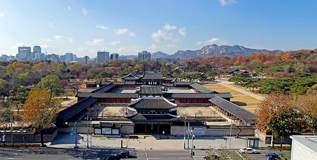
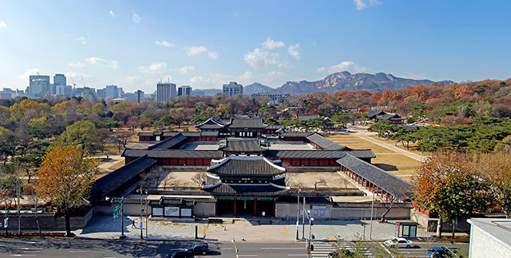
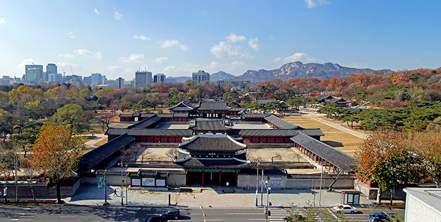

한복이란
한복의 유래
한복 입는 순서
더 알아보기
현대에는 한복을 주로 명절에 입는다. 결혼식에서도 입기도 한다.
전통 한복 말고도 개량 한복과 생활 한복이라는 편한 한복이 생겼다.
한복을 접하고 싶다면 한복 매장에 가서 사거나 대여점에서 대여하여 입을 수 있다.

경복궁, 창덕궁, 창경궁, 덕수궁에 한복을 입고 가면 무료 관람을 할 수 있다. 위 이미지들은 각각의 궁궐 사이트로 연결된다.
 
